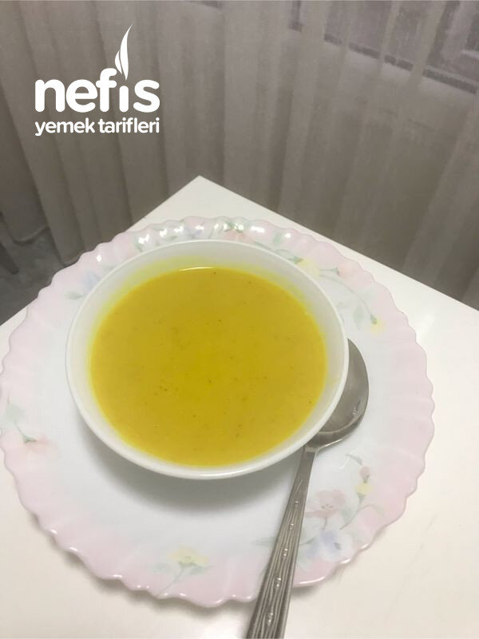

🍽️ 6-8 kişilik⏱️ Hazırlık: 10 dk🔥 Pişirme: 30 dk🏷️ Çorba Tarifleri
Malzemeler
- 1 su bardağı kırmızı mercimek
- 1 büyük havuç
- 1 büyük soğan
- 1 büyük patates
- 1 tatlı kaşığı kadar zerdeçal
- Tuz
- 2 lt sıcak su
- Yarım çay bardağı zeytinyağı
Hazırlanışı
- Tenceremize sıvı yağ ilave edip ocağa alıyoruz.
- Küp doğradığımız, havuç, soğan ve patatesi ilave ederek 3-4 dakika kadar soteliyoruz.
- Yıkadığımız mercimeği de ilave ederek 3-4 dakika kadar karıştırarak soteledikten sonra sıcak suyu ilave ediyoruz.
- Ocağı kısarak arada karıştırarak pişiriyoruz.
- Sebzeler yumuşayınca blenderden geçiriyoruz.
- Kıvamı koyu ise su ilave ederek kıvamını ayarlıyoruz.
- Zerdeçal ve tuz ilave ederek karıştırıyoruz. Nefis çorbamız servise hazır. Afiyet olsun 😊.